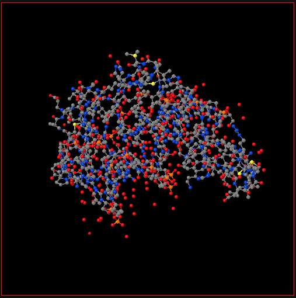

Usage#
import the widget for widget_jsmol#
from widget_jsmol import WidgetJmol
w = WidgetJmol()
display(w)

Load new file by using the structure element:#
In order to load a new structure, you need to change the “structure” variable. Here, the root directory is respect to root directory in Jupyter.
w.structure = "/H2O/POSCAR"
There is another way to load a new structure.
w.script = 'load http://localhost:8888/files/widget-jsmol/structure/test.pdb'
Run Jmol/Jsmol script#
Jmol/Jsmol has a powerful scripting language. Here, one can use the “script” variable to run the Jmol/Jsmol scripts.
Change background color#
w.script = "set background red"
Change atom by symbol color and radius#
w.script = "select _O; color gold; spacefill 200"

Unitcell#
w.script = "unitcell on"
Delete atoms and bonds#
w.script = "set picking on; set picking DELETEATOM"
w.script = "set picking on; set picking DELETEBOND"
These two commands will enable to delete atoms and bonds from the visualizer interactively.
Drag atoms#
jmol.script = "set picking dragatom"
This command will enable to drag atoms inside the visualizer.
Show isosurface#
In Jmol/Jsmol, one can use the “isosurface” command to plot 3D isosurface.
jmol.script = "isosurface cutoff 0.02 "http://localhost:8888/files/H2O/CHGCAR" translucent 0.2"
Jmol can load many volumetric data files, for instance CHGCAR from VASP calculations and Gaussian cube files. However, you need to give the files directory through the Jupyter host port.
Label the atoms#
jmol.script = "label %a; color label blue"
Set camera#
jmol.script = "set perspectiveDepth on"
jmol.script = "set perspeciiveDepth off"
Callback functions#
Jmol/Jsmol supports many callback functions. In this widget, I implemented some callback functions. For example, the “atomno” member will give the current picked atom number (the atom can be picked by double clicking) from the visualizer.
If you use the visualizer to measure the distance of two atoms, the “measure_distance” will return the measured values.
jmol.measure_distance
The current orientation will be always updated. One can obtain the current orientation by calling the “_current_orientation” member.
jmol._current_orientation
Issue#
This widget need internet to fetch Jsmol files to show the visualizer. Without internet access, the visualizer CANNOT show in the Jupyter.